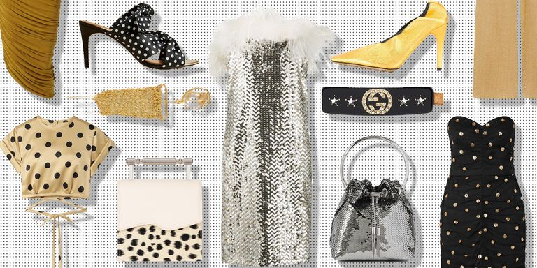
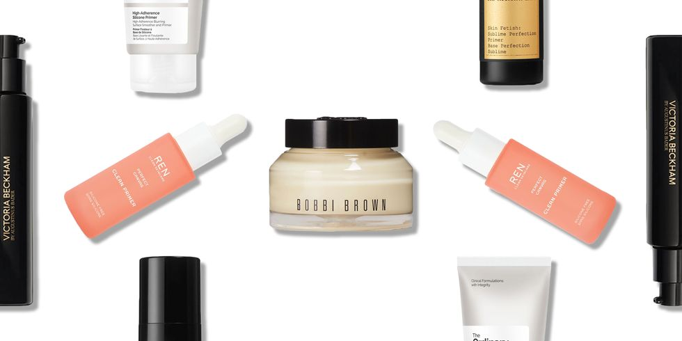
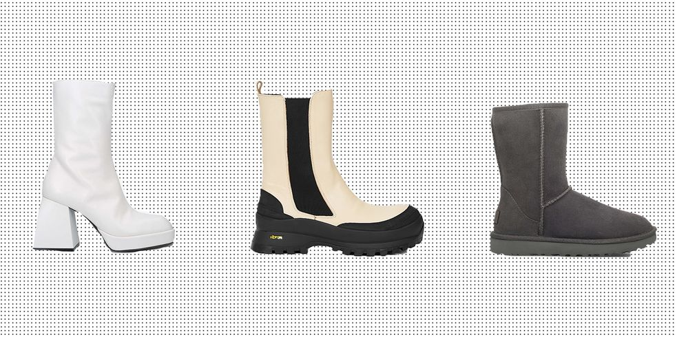

I'm a Beauty Vlogger and Beauty Influencer
I love to do makeup and make some videos about it. I love to influence my followers
Autumn is a time for transitional dressing - which means switching to a trench coat or a short, lightweight puffer coat. And then come winter, we're talking full scarves, gloves, wool coats and hats. Here is our pick of the best autumn and winter fashion, from high street through to designer.
Make-up primers are basically like sanding a wooden floor, they create a smooth and less porous surface. Whatever your skin type, finding the right primer can be a godsend, making your make-up last much longer and brightening your whole look. Check out our pick of the best make-up primers that you need in your life.
Winter is back! spend down time walking in the park and seeing people outside, of course very enjoyable. But with mushy leaves to content with and wet and windy walks on the horizon, you'll definitely need an excellent, sturdy pair of winter boots to get you through this season. Here is 20 Of The Best Winter Boots For Women.
Modest Fashion Hacks Every Girl Should Know!